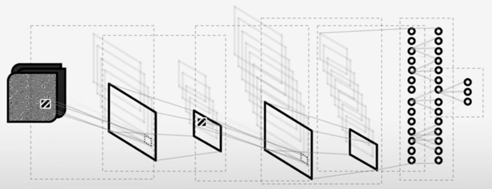

Naive Bayes Classifier
The naive conditional independence assumption: each feature is (conditionally) independent of every other feature, given the label.
\( p(x|y) = p(x_1,x_2,...,x_d|y) = \prod\limits_{i=1}^{d}p(x_i|y) \)
The naive Bayes classifier: the predicted label is given by
\( \hat{y} = \arg\max\limits_{y} P(y) \prod\limits_{i=1}^{d} p(x_i|y) \)
The parameters of the classifier:
\( P(y) \)
\( p(x_i|y) \) for all \( i,y \)
\( x= \langle x_1, x_2, ..., x_d \rangle \) where each \(x_i\) can take only a finite number of values from \( \{v_1, v_2, ..., v_m\} \)
In this case, the parameters of the classifier are
\( P(y) \)
\( p(x_i=v_k|y) \) for all \( i,k,y \)
Given a training set of n labelled samples \( \langle x^i, y^i \rangle, i = 1,...,n \), how to estimate the model parameters?
\( P(y) = \frac{\# \: of \: samples \: with \: label \: y}{n} \)
\( p(x_i=v_k|y)=\frac{p(x_i=v_k,y)}{P(y)} = \frac{\# \: of \: samples \: with \: ith \: feature \: taking \: value \: v_k \: and \: label \: y}{\# \: of \: samples \: with \: label \: y} \)
Logistic Regression
The logistic function: \( \sigma(t) = \frac{1}{1+\exp(-t)} = \frac{\exp(t)}{1+\exp(t)} \)

Logistic regression: use the logistic function for modeling \(P(y|x)\), considering only the case of \(y \in \{0,1\}\)
\( P(y=0|x) = \frac{1}{1+\exp(w_0+\sum_{i=1}^{d}w_ix_i)} = \frac{1}{1+\exp(w^tx)} = 1-\sigma(w^tx) \)
\( P(y=1|x) = \frac{\exp(w_0+\sum_{i=1}^{d}w_ix_i)}{1+\exp(w_0+\sum_{i=1}^{d}w_ix_i)} = \frac{\exp(w^tx)}{1+\exp(w^tx)} = \sigma(w^tx) \)
Given a sample x, we classify it as 0 (i.e., predicting y = 0) if
\( P(y=0|x) \ge P(y=1|x) \Rightarrow \frac{1}{1+\exp(w^tx)} \ge \frac{\exp(w^tx)}{1+\exp(w^tx)} \Rightarrow w^tx \le 0 \)
Or we classify it as 1, if \( w^tx > 0 \)
What are the model parameters in logistic regression?
Given a parameter w, we have \( P(y|x) = \sigma(w^tx)^y(1-\sigma(w^tx)^{1-y}) \)
Given n training samples, \( \langle x^i,y^i \rangle, i = 1, ..., n, \) how can we use them to estimate the parameters?
For a given w, the probability of getting all those \( y^1, y^2, ..., y^n \) from the correponding data \( x^1, x^2, ..., x^n \) is
\( L(w) = \prod_{i=1}^{n}P(y^i|x^i,w) = \prod_{i=1}^{n}\sigma(w^tx^i)^{y^i}(1-\sigma(w^tx^i)^{1-{y^i}}) \)
\( l(w) = log(L(w)) = \sum_{i=1}^{n}log[\sigma(w^tx^i)^{y^i}(1-\sigma(w^tx^i)^{1-{y^i}}] = \sum_{i=1}^{n}[log(\sigma(w^tx^i)^{y^i}) + log((1-\sigma(w^tx^i)^{1-{y^i}})] \)
Optimal parameters?
\( w^* = \arg\max\limits_{w} l(w) = \arg\max\limits_{w} \sum_{i=1}^{n} [y^iw^tx^i - log(1+\exp(w^tx^i))] \)
We can not really solve for \( w^* \) analytically (no closed-form solution), but we can use a commanly-used optimization technique, gradient descent/ascent, to find a solution.
SVM (Support Vector Machine)
Formulating the Margin
We can have the canonical formulation for the three planes as\( H: w^t x + b = 0 \)
\( H_1: w^t x + b = +1 \)
\( H_2: w^t x + b = -1 \)
The region between \( H_1 \) and \( H_2 \) is also called the margin, and its width is \( \frac{2}{||w||} \)

Formulating SVM
\( \{ w^*,b^* \} = \arg\min\limits_{w,b}\frac{1}{2}||w||^2 \)subject to
\( w^tx^i + b \ge +1 \) for \( y^i = +1 \)
\( w^tx^i + b \le -1 \) for \( y^i = -1 \)
The constraints can be combined into:
\( y^i(w^t x^i + b) - 1 \ge 0 \)
A nonlinear (quadratic) optimization problem with linear inequality constraints.
Reformulating using Lagrangian multipliers
Lagrangian Primal Form\( L_P(w,b,\alpha) = \frac{1}{2}||w||^2 - \sum\limits_{i} \alpha_i[y^i(w^tx^i+b)-1] \)
then the SVM solution should satisfy
\( \frac{\partial L_P}{\partial w} = 0, \frac{\partial L_P}{\partial b} = 0, \alpha_i \ge 0, \alpha_i[y^i(w^tx^i+b)-1] = 0 \)
The final w is given by \( w = \sum\limits_{i} \alpha_i y^i x^i \) and b is given by \( y^k - w^t x^k \) for any k such that \( \alpha_k > 0 \)
Lagrangian Dual Form
\( L_D(w,b,\alpha) = \sum\limits_{i} \alpha_i - \frac{1}{2}\sum\limits_{i,j} \alpha_i \alpha_j y^i y^j \langle x^i,x^j \rangle, \) where \(\langle x^i,x^j \rangle\) means inner product.
The solution is the same as before. But there is an important observation.
Points for which \( \alpha_i > 0 \) are called support vectors.
PCA (Principal Component Analysis)
The problem is to find the direction of the largest variance.
Given n samples \( D=\{x_1,x_2,...,x_n\} \) in d-dimensional space,
find a direction \( e_1 \), such that the projection of \( D \) onto \( e_1 \) gives
the largest variance (compared with any other direction).
\( e_1 \) is a d-dimensional vector with unit norm.
The mean of the projections: \( \bar{y} = \frac{1}{n} \sum\limits_{i=1}^{n} y_i = \frac{1}{n} \sum\limits_{i=1}^{n} \langle x_i,e \rangle = \langle \bar{x},e \rangle \)
The variance of the projections: \( \sigma^2 = \frac{1}{n} \sum\limits_{i=1}^{n} (y_i-\bar{y})^2 = \frac{1}{n} \sum\limits_{i=1}^{n} [\langle x_i-\bar{x},e \rangle]^2 \)
Expand the previous expression
\( \sigma^2 = \sum\limits_{j=1}^{d} \sum\limits_{k=1}^{d} e_j e_k [ \frac{1}{n} \sum\limits_{i=1}^{n} (x_{i,j}-\bar{x}_j) (x_{i,k}-\bar{x}_k) ] = \sum\limits_{j=1}^{d} \sum\limits_{k=1}^{d} e_j e_k C_{jk} = e^t C e \)
C is the sample covariance matrix.
To find \( e_1 \), we can do
\( e_1 = \arg\max\limits_{e} \sigma^2 = e^t C e \) subject to \( ||e|| = 1 \)
Constrained maximization: use Lagrangian multiplier method.
maximize \( F(e) = e^t C e - \lambda (e^t e - 1) \)
Set the partial derivative to 0, we have
\( \frac{\partial F}{\partial e} = 2 C e - 2 \lambda e = 0 \)
\( C e = \lambda e \)
The solution is an eigenvector of \( C \), with eigenvalue \( \lambda \), which is also the variance under \( e \):
\( \sigma^2 = e^t C e = \lambda \)
We should set \( e_1 \) to be the eigenvector correponding to the largest eigenvalue \( \lambda_1 \)
CNN (Convolutional Neural Network)
Image Filtering via Convolution: Kernel
By varying kernel's coefficients, we can achieve different goals - smoothing, sharpening, detecting edges, etc.
Better yet: can we learn proper kernels? Part of CNN's objective

Some convpool layers plus some fully-connected layers
(convpool layer: convolution, pooling, activation)
Neural Network Definition Example:
class Net:
def __init__(self):
# input: 28x28
# output: 1x4 (only a subset, containing 4 classes, of the MNIST will be used)
# conv1: {(28-5+0x0)/2+1} -> (12x12x6) (output size of convolutional layer)
# maxpool2: {(12-2)/2+1} -> (6x6)x6 (output size of pooling layer)
# fc3: 216 -> 32
# fc4: 32 -> 4
# softmax: 4 -> 4
lr = 0.001
self.layers = []
self.layers.append(Convolution2D(inputs_channel=1, num_filters=6, kernel_size=5, padding=0, stride=2, learning_rate=lr, name='conv1'))
self.layers.append(ReLu())
self.layers.append(Maxpooling2D(pool_size=2, stride=2, name='maxpool2'))
self.layers.append(Flatten())
self.layers.append(FullyConnected(num_inputs=6*6*6, num_outputs=32, learning_rate=lr, name='fc3'))
self.layers.append(ReLu())
self.layers.append(FullyConnected(num_inputs=32, num_outputs=4, learning_rate=lr, name='fc4'))
self.layers.append(Softmax())
self.lay_num = len(self.layers)